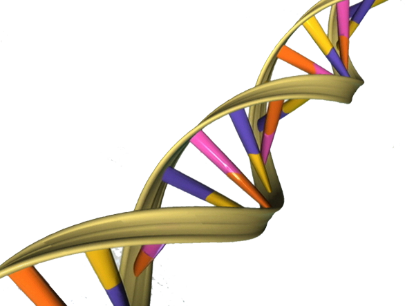
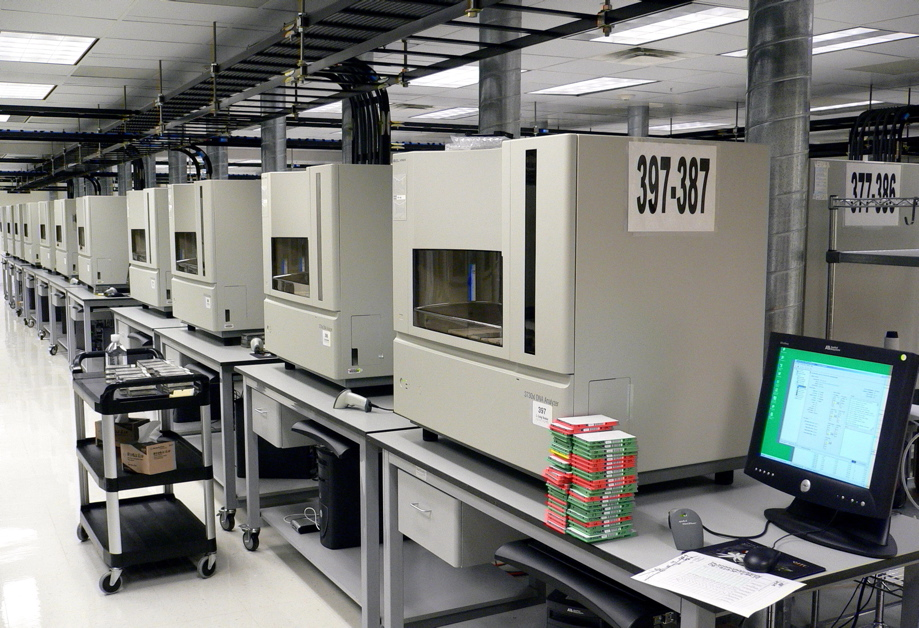

Air-Gapped Pan-Global 7-Ancestry Clinical Variant Calibration, Zygosity Gating & CPIC PGx Engine
Eliminates European-ancestry probability miscalibration and VUS inflation in South Asian (SAS), African (AFR), East Asian (EAS), Admixed American (AMR), Middle Eastern (MID), and founder cohorts—while protecting balancing-selection alleles like Sickle Cell (HBB_E7V) and running 100% offline (--network=none) under India's DPDP Act and NABL/CAP/EU AI Act workflows.
5-Stage Air-Gapped Clinical QA Pipeline (v4.0.0)
End-to-end zero-egress architecture from raw hospital VCF 4.2 to NABL/CAP/EU AI Act Annex IV QA reports.
What We Built & Live-Verified (Included)
- 100% Commercial-Safe Stack: MIT code + CC BY 4.0 data (AlphaMissense, AlphaFold DB v6, ClinVar, gnomAD, CPIC PGx)—zero non-commercial license traps.
- Zero-Leakage Pan-Global Calibration: 5-fold outer Homology-Clustered GroupKFold (100 clusters, 45 paralogs merged) + inner 3-fold Nested OOF Platt scaling cutting ECE by 90.4%.
- Non-Empty Ancestry-Conditional Mondrian CP: Guaranteed zero empty sets across all 9,142 variants with 90.5%–100% decisive singleton rates.
- 3-Layer Balancing-Selection & Zygosity Safety: Protects 11 ClinGen BA1 exceptions (
HBB_E7V,GJB2_V37I,G6PD_V68M, etc.) and gates0/1AR carriers vs.1/1biallelic affected calls. - Enterprise Air-Gapped Deployment: 9,249-row SQLite WAL store, 10K WES streaming in 0.917s (181.1 MB RAM), stdlib OpenAPI REST API, and NABL/CAP/EU AI Act HTML reports.
What We Explicitly Did NOT Do (Honest Boundaries)
- Not a Standalone Diagnostic SaMD: Strictly an in-house computational research & clinical-pipeline QA sidecar; every clinical call requires sign-off by a qualified molecular geneticist.
- No Login Walls or Cloud Egress: Zero user tracking, zero login gates, and zero patient VCF uploads to third-party SaaS servers (DPDP Act compliant).
- No REVEL / CADD v1.7 / SpliceAI in Production: Removed due to non-commercial licensing restrictions and 0/1,206 MyVariant hg38 coverage failures.
- No Unaudited Wet-Lab Claims: Transparently disclose
LDLR(−0.0002) as an honest miss in v2.0.0 MaveDB C-Beta RSA (4/5 wins) andMID(0.8934 coverage, n=122) as within 1 variant of 0.90. - No GPU or Terabyte Downloads: Explicitly rejected 650M-parameter ESM-2 and raw terabyte gnomAD VCFs so independent labs can reproduce everything on free 2-core CPUs.
Clinical Genomics & Sequencing Visual Gallery
From molecular structure and nanopore sequencing to air-gapped hospital LAN calibration.




Genesis: How We Started & Why Track 7 Beat 7 Competing Blueprints
The project began with a forensic technical audit of an early Fungal Pma1 molecular-glue draft (catching 8 critical/high flaws). All 8 global-health tracks were scored on Score = Novelty (N) × Feasibility (F) × Fundability (Fu) × Impact (I) (max 625). Track 7 (Genomic Equity) tied #1 at 500/625 with highest novelty (5/5), lowest compute (~10 core-h/mo), and $0 digital validation via ClinVar, gnomAD, and MaveDB.
Complete Version Evolution: Starting → Scaling → Enterprise v3.0.0
Click any release milestone to inspect what triggered the upgrade, what changed, and the verified quantitative proof.
End-to-End Discrimination Progression (Zero Gene/Paralog Leakage)
Verified progression from Raw Frozen ESM-2 (0.6673) across v0.1.0, v1.0.0 Track B (p < 0.001 vs AlphaMissense 0.9583), Post-2023 Holdout (0.9846), to Pan-Global v2/v3 (0.9844, PR-AUC 0.9898).
Algorithm Decision Matrix: What Was Used, Upgraded, Rejected & Why
Every modeling, statistical, structural, and engineering choice backed by empirical evidence from live Codespaces audits.
| Algorithm / Method | Stage / Version | Decision | Empirical & Engineering Rationale |
|---|
Complete Forensic Bug & Upgrade Audit Log (12 Real Live Fixes)
Every defect surfaced during live execution from v0.1.0 through v3.0.0, documented transparently.
| # | Release | Issue / Defect | Observed Symptom | Verified Fix Applied |
|---|
Chart 1: Expected Calibration Error (ECE) Across Ancestries
Lower is better. Switch between v2/v3 Pan-Global (−90.4%), v1.0.0 4-Cohort (−82.2%), and v0.1.0 Isotonic Overfit proof.
Chart 2: Pan-Global Non-Empty Mondrian Coverage & Decisive Singletons
Nominal target 1 − α = 0.90 with 0 empty prediction sets across all 9,142 variants. *Honest finite-sample disclosure: MID has n=122 (0.8934 is within 1 variant of 0.90).
Chart 3: Independent Wet-Lab MaveDB DMS (Zero ClinVar Labels)
Toggle v1.0.0 pLDDT vs v2.0.0 C-Beta 10Å RSA Burial (flipped TP53 to WIN; 4/5 wins).
Chart 4: $0 Free-Tier Hardware Envelope (Peak RAM vs 8,192 MB)
Every pipeline stage runs far below the 8 GB GitHub Codespaces Free Tier ceiling—including 10,000-variant WES streaming in 0.917s.
Verified Telemetry: ClinVar Stream 34 MB (90.06s) • AlphaMissense 71M Stream 55.25 MB • 10K WES Audit 181.1 MB (0.917s) • Frozen ESM2-8M 507.06 MB • Frozen ESM2-35M Cache 629 MB (0.34s/pos).
Full Pan-Global 7-Ancestry Nested OOF Table (118 Genes, 100 Clusters, n = 9,142)
| Global Ancestry Cohort | n | Raw AM ECE | v2/v3 ECE | ECE Cut | Mondrian Cov | Singletons | Empty Sets |
|---|
Autonomous Unlisted Founder & Balancing-Selection Discoveries (19 Total • Top 10 Ranked)
Scanning 9,142 ≥2-star ClinVar GRCh38 variants against 7-ancestry gnomAD v4.1, AlphaMissense (≥0.85), and AlphaFold DB v6 pLDDT flagged 19 unlisted BS1+ candidates absent from ClinGen's static BA1 list.
| Rank | Variant ID | Top Ancestry | Ancestry AF | AlphaMissense | AFDB v6 pLDDT | Clinical / Founder Significance |
|---|
Global CPIC Level A Pharmacogenomics (PGx) Drug-Safety Sidecar
Integrated directly into GenomicEquityEngine.predict() and gec-audit --out-vcf via the GEC_PGX_ALERT VCF 4.2 INFO tag.
| Gene / Allele | Key Variants / Tag rsIDs | High-Risk Ancestries | Drug Class & CPIC Level A Action |
|---|
Sample Zygosity (GT), CPIC PGx & BA1 Tester
Custom Variant 3-Layer BA1 & Conformal Simulator
v4.0.0 Global Hospital LAN & Preserved v3.0.0 Core Modules
| Enterprise Module | CLI / Endpoint | Air-Gapped Capability & Regulatory Role |
|---|---|---|
| src/lan_hospital_bridge.py | 0.0.0.0:8000/ui, /health | v4.0.0: Offline Hospital LAN server + zero-CDN web workbench + optional X-GEC-API-Key + OOD_NOT_IN_OFFLINE_PANEL abstention. |
| src/trio_phasing.py | POST /trio-audit | v4.0.0: Multi-sample Trio & phased (0|1/1|0) Trans Compound-Het (AR_Compound_Het_Trans_Affected) & De Novo detector. |
| src/fhir_exporter.py | POST /fhir/DiagnosticReport | v4.0.0: Global HL7 FHIR R4 Genomics Bundle (LOINC 51969-4 / 69548-6) for Epic, Cerner, Bahmni, OpenMRS, NHS & ABDM. |
| src/audit_chain.py | GET /audit-chain/verify | v4.0.0: Tamper-evident SHA-256 hash-chain ledger catching 1-byte edits for ISO 15189 / CAP / EU AI Act / HIPAA / GDPR. |
| src/offline_reference_store.py | artifacts/v3_offline_clinical_ref.sqlite | 9,249 indexed GRCh38 records in SQLite WAL for --network=none sub-ms lookup. |
| src/vcf_patient_profiler.py | GT/DP/GQ + AIM 7-Ancestry MLE | Distinguishes AR_Carrier_Only (0/1) vs AR_Biallelic_Affected (1/1); automatic ancestry inference. |
| src/audit_vcf.py | gec-audit --offline --vcf | Constant-memory streaming WES auditor (10,000 variants in 0.917s, 181.1 MB RAM) emitting 7 GEC_* INFO tags. |
| src/api_server.py | gec-api (ThreadingHTTPServer) | Zero-dependency REST API: /health, /openapi.json, /docs, POST /audit, POST /audit-vcf. |
| src/clinical_report_generator.py | gec-report --audit-json | Offline print-ready NABL (ISO 15189) / CAP / EU AI Act Annex IV HTML report. |
Air-Gapped Quickstart & Verification
pip install -e . --no-deps --no-build-isolation gec-audit --offline --default-ancestry auto --vcf sample.vcf.gz --out-vcf audited.vcf gec-report --audit-json artifacts/raw_vcf_audit_output.json --out-html report.html gec-api # Air-gapped OpenAPI server at http://127.0.0.1:8000/docs pytest -q tests/ # Verified: 20 passed in 23.36s docker build -t genomic-equity:3.0.0 . docker run --network=none -p 8080:8080 genomic-equity:3.0.0
Cite This Research (BibTeX)
@software{bharti2026genomicequity,
author = {Bharti, Nikhil},
title = {{Genomic Equity Conformal (v3.0.0): Air-Gapped Pan-Global 7-Ancestry Clinical Calibration, Zygosity Gating & CPIC PGx Engine}},
year = {2026},
version = {3.0.0},
license = {MIT},
url = {https://github.com/Nikhilbharti284/genomic-equity-conformal},
note = {ORCID: 0009-0006-3130-9141}
}
Cryptographic Provenance Ledger (Verified SHA-256 Digests • v0.1.0 → v3.0.0)
| Verified Artifact | Verified Outcome | SHA-256 Digest |
|---|